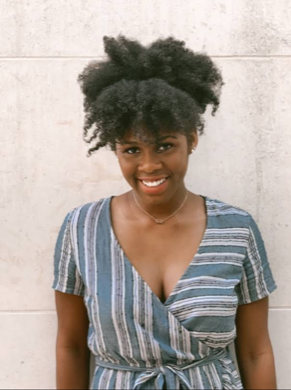

If my friends were to describe me using three words, they might use words like fearless, loving, and independent. My background as one of two siblings of a single mother defines who I am today because of how much more responsibility fell on me to help my mom keep us afloat. Working hard and persevering through difficult situations were normalized for me, and those traits carried over to my academic career as I balanced high school and college courses to earn my Associates the same year I received my high school diploma.
I am driven to make the goals I set for myself a reality. Going into my college years, I viewed myself developing my coding skills while also finding a community that would benefit my own growth as a young woman. I did both by enrolling in a bootcamp that would expand my coding abilities tenfold, and by joining a spirit group of like minded girls. Unfortunately, the spirit group I joined was built on a foundation of unmerited judgment and downright bullying. I decided that I would stand up and defend the victims, including myself, and create my own organization from scratch called Texas Sunshines, and this spirit group would be a reflection of my own definition of community.
While in California I am excited to define new goals for myself, such as refining the complex techniques of software development, exploring my new environment, and creating my own happiness. I am excited to integrate my fitness lifestyle into my move to California. The fitness culture is much more vibrant and alive on the West coast, and I am ready to reach new horizons that I never would have thought possible. Another one of my interests that will be easy to pursue no matter where my career takes me is my love for binging TV series. There is nothing more relaxing at the end of the day than curling up with some Netflix and watching your favorite show.